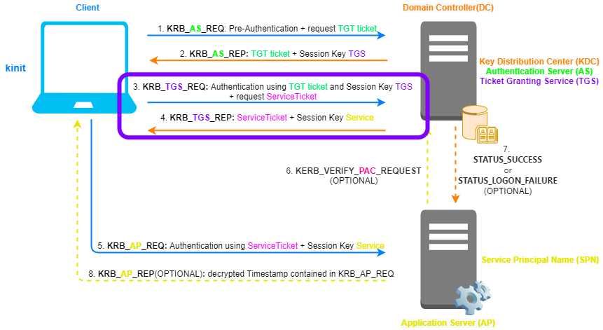

Golden Ticket
Golden TicketsGolden Tickets are forged
Ticket Granting Ticket(TGT)(while Silver Tickets are forged
ServiceTickets) KRB_
TGS_REQ with a custom
PAC(to escalate privileges)
Golden Tickets are signed with
krbtgt account secret key, while Silver Tickets
are signed with
Service account secret
keyForge the Ticket Granting
Ticket(TGT) in KRB_TGS_REQIf an Attacker is been able to extract the
secret key of the
krbtgt account, he can
then forge a
Ticket Granting Ticket(TGT) with a custom
PAC.
• The
Ticket Granting Ticket(TGT) is
encrypted with the
krbtgt account secret
key•
PAC(authorization-data) inside
TGT: This
PAC is used for verification by the
KDC before sending KRB_
TGS_REP
As seen
in the
explanation
of Kerberos, it is signed two times(
ietf.org),
this mean PAC contain two checksum:
▪ signed with the
target Service secret key (
PAC_SERVER_CHECKSUM)→
Service secret Key ▪ signed with the
KDC(krbtgt account) secret key (
PAC_PRIVSRV_CHECKSUM)
Considerations:• Since the
verification of the checksums(
PAC_SERVER_CHECKSUM and
PAC_PRIVSRV_CHECKSUM) of the
PAC signed with
KDC(krbtgt account) secret key is done only
if the
TGT is older than 20 minutes, we can use inside the
PAC also deleted/revoked accounts
• One might assume that the lack of KRB_
AS_REQ/KRB_
AS_REP can be a trigger for
detection.
But is not possible because Kerberos is a stateless protocol and this mean that the AD does not
keep track of prior KRB_
AS_REQ/KRB_
AS_REP
before a KRB_
TGS_REQ is performed.
If a rule like this is implemented, a
lot of false positives would appear (e.g.:
TGT's generated by DC01 and
subsequently used to request a
ServiceTicket on
DC02).
ConclusionThis mean that after that we have forged the
Ticket Granting Ticket(TGT) we can generate a Golden Ticket
KRBTGT Password Change Scenarios:KDC to verify a
TGT will also attempt to
validate it with hashes in the password history. Because of that the company need to change the password of the
KRBTGT account twice. The
password history value for the krbtgt account is 2, meaning it includes the 2 most recent passwords. By resetting
the password twice you effectively clear any old passwords from the history.
◇
Maintenance password change: Changing the KRBTGT account password once,
waiting for replication to complete (and the forest converge), and then changing the password a second time,
provides a solid process for ensuring the
KRBTGT account is protected and
reduces risk (Kerberos and application issues).
To check the status of the replication:
PS> repadmin /replsummary
PS> repadmin /showrepl
◇
Breach Recovery password change: Changing the KRBTGT
account password twice in rapid succession (before AD replication completes) will invalidate all existing
TGTs forcing clients to re-authenticate since the KDC service will be unable to
decrypt the existing
TGTs. Choosing this path will likely require rebooting
application servers (or at least re-starting application services to get them
talking Kerberos correctly again).
Detection?Golden
TGT Tickets cannot be detected when they are created because this happens offline
without interaction with the AD.
Periodic hunting on end-user systems is recommended to be performed to detect
TGT's in memory with an unreasonably long validity
example: using klist
Bibliography:
•
https://www.blackhat.com/docs/us-14/materials/us-14-Duckwall-Abusing-Microsoft-Kerberos-Sorry-You-Guys-Don't-Get-It.pdf
This is the "the Golden Ticket talk" where Benjamin Delpy for the first time described Golden
Tickets
•
https://www.slideshare.net/gentilkiwi/mimikatz-how-to-push-microsoft-to-change-some-little-stuff•
https://en.hackndo.com/kerberos-silver-golden-tickets/•
https://adsecurity.org/?p=483
{kind=link}